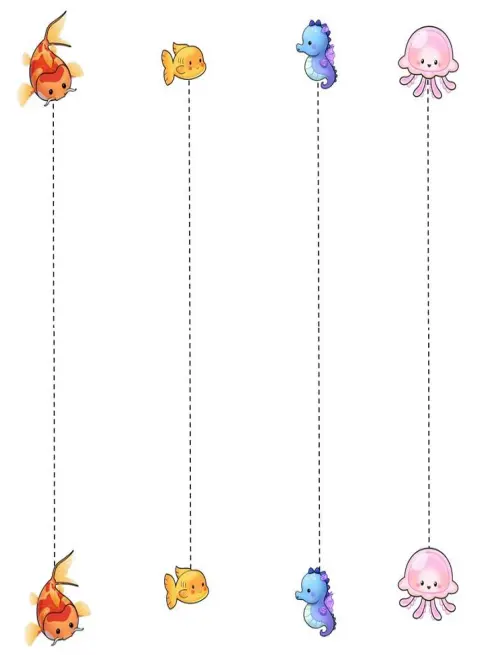
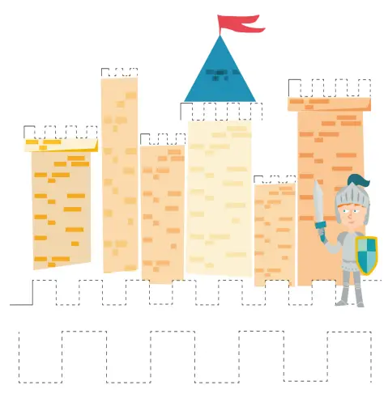

O que tem dentro das 65 páginas?
- ✏️ Traços iniciais e noção espacial.
- 🎯 Exercícios de domínio e pressão do lápis.
- 🧩 Labirintos de foco para treinar a persistência.
- 🔤 Preparação direta para o desenho de letras e números.



🎁 ATENÇÃO: Quer o Kit Completo que você viu no anúncio? > Ao clicar no botão abaixo e garantir a sua Apostila Principal por R$ 27,90, você vai destravar a opção de adicionar os Guias Extras (Desmame Digital e 100 Atividades) com um desconto exclusivo direto na página de pagamento!